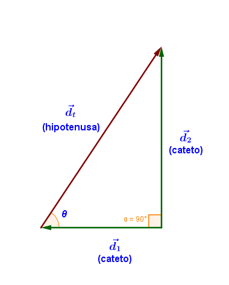
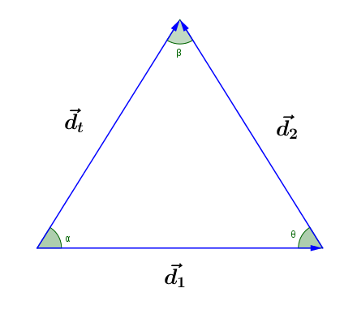

Suma de vectores - Métodos analíticos
Se obtiene la magnitud y dirección de la resultante por medio de leyes y teoremas matemáticos
Método de Pitágoras
Sirve para sumar solo 2 vectores que formen un ángulo de 90°
Magnitud de la resultante
Se usa el teorema de Pitágoras asumiendo que los vectores componentes son los catetos y la resultante es la
hipotenusa
Dirección de la resultante
Se determina mediante la función tangente
$$\theta = \tan^{- 1}\left( \frac{\text{cateto\ opuesto}}{\text{cateto\ adyacente}} \right)$$
o bien:
$$\theta = \tan^{- 1}\left( \frac{d_{1}}{d_{2}} \right)$$

Ejemplo
Método de las leyes de seno y coseno
Se calcula la resultante de dos vectores concurrentes cuyo ángulo sea distinto de 90°
Magnitud de la resultante
Ley de cosenos:
En un triángulo cualquiera, el cuadrado de un lado es igual a la suma de los cuadrados de los otros dos, menos
el doble del producto de los mismos por el coseno del ángulo que forma entre sí
$$(d_t^2 )=d_1^2+d_2^2-2d_1 d_2 \cos \Theta$$
$$d_{t} = \sqrt{d_{1}^{2} + d_{2}^{2} - 2d_{1}d_{2}\cos \Theta }$$
Dirección de la resultante
Ley de senos
En un triángulo cualquiera los lados son proporcionales al seno de los ángulos opuestos
$$\frac{d_{1}}{\sin \beta } = \frac{d_{2}}{\sin \alpha } = \frac{d_{t}}{\sin \theta }$$

Ejemplo
Componentes ortogonales

Se determina la componente horizontal y vertical de cada vector
$$V_{y} = V\ sen\theta$$
$$V_{x} = V\ cos\theta$$

Se suman las componentes horizontales multiplicando la magnitud por el coseno del ángulo
$$\sum{x} = \left( F_{1}x \right)\left( \cos\alpha \right) + \left( F_{2}x \right)\left( \cos\beta \right) +
\left( F_{3}x \right)\left( \cos\gamma \right) + \ldots$$

Se suman las componentes verticales multiplicando la magnitud por el seno del ángulo
$$\sum{y} = \left( F_{1}y \right)\left( \operatorname{sen}\alpha \right) + \left( F_{2}y \right)\left(
\operatorname{sen}\beta \right) + \left( F_{3}y \right)\left( \operatorname{sen}\gamma \right) + \ldots$$

Para encontrar analíticamente la magnitud de la resultante, se utiliza el Teorema de Pitágoras
$$R = \sqrt{\left( \sum{x} \right)^{2} + \left( \sum{y} \right)^{2}}$$

El ángulo se determina por:
$$\theta = tan^{-1}\left( \frac{\sum{y}}{\sum{x}} \right)$$
Ejemplo